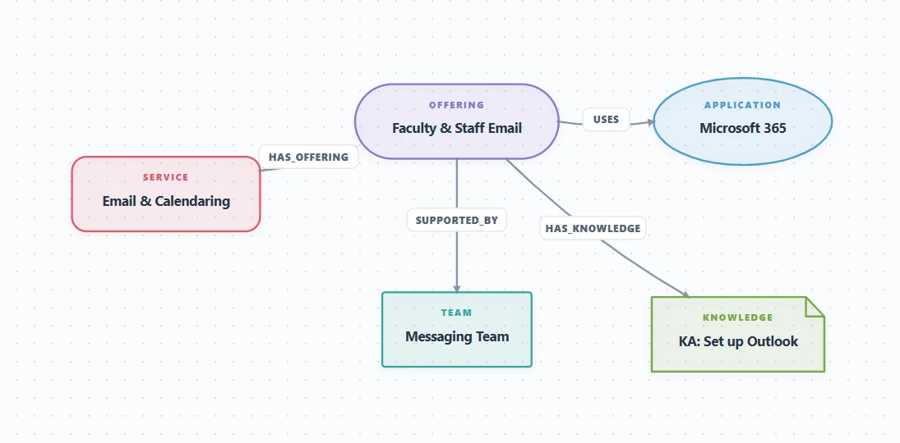
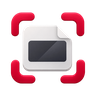
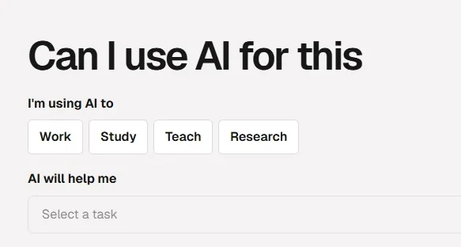
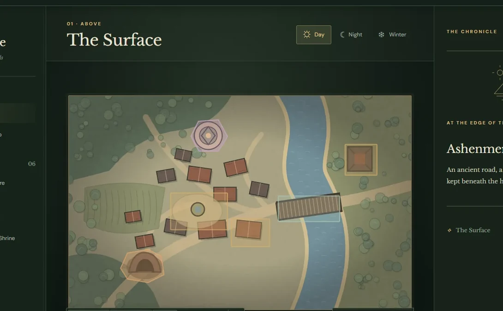
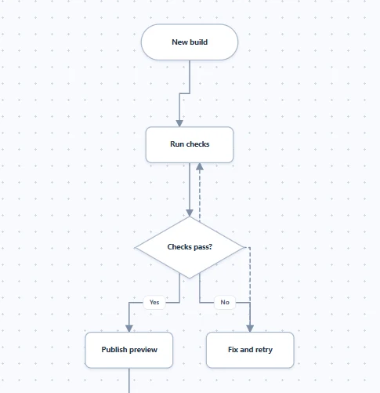

Cool stuff
for cool people
Applications, tools, artist websites and other digital dabblings
Selected work


Institutional prototypes
AI@YORK
A prototype for finding institutional AI guidance, tools and support

Applications & platforms
Waymark Atlas
Explore Ashenmere through an interactive fantasy atlas with connected map layers

Artist websites
Apple of Basilisk
A doom-metal band site with releases and interactive, burning photographs
Project index
23 projects
-
AI @ York Studio
Institutional prototypesA form-based content management interface concept
-
AI Content Atlas
Institutional prototypesAn interactive audit of AI content and information needs
-
AI Inventory
ToolsA searchable catalogue of AI resources
-
AI@YORK
Institutional prototypesA prototype for finding institutional AI guidance, tools and support
-
Apple of Basilisk
Artist websitesA doom-metal band site with releases and interactive, burning photographs
-
Auto-Triage
Interactive presentationsAn interactive overview of service ticket automation
-
Beyond D
ExperimentsA browser tool for assembling tabletop adventures and exporting them to PDF
-
Capture
ToolsA Windows tool for turning recorded workflows into step-by-step documentation
-
COMP3
ExperimentsA desktop-style interface exploring human interface guidelines
-
Flowboard
ToolsDraw flowcharts visually and work with the diagram source side by side
-
Forge Alpha UI
ExperimentsAn early-stage knowledge authoring interface
-
HTML Editor
ToolsEdit HTML and see the rendered page directly in the browser
-
KCS
Interactive presentationsAn interactive presentation on piloting a knowledge base and supporting service teams
-
Knowledge UAT
Institutional prototypesA prototype for testing and reviewing knowledge-base content
-
MARS Demo
Interactive presentationsAn interactive presentation about an AI development platform
-
MARS Platform
Applications & platformsA website exploring the MARS development platform
-
New York / UIT
Institutional prototypesA concept for navigating an institutional IT services website
-
NEXUS
Applications & platformsExplore relationships in a service knowledge graph
-
Nodeboard
ToolsA collaborative graph whiteboard for sketching ideas and mapping relationships
-
Overland Map Maker
ExperimentsA dice-driven experiment for drawing paths across an overland map
-
STRYFEBOOLS
Artist websitesIndependent hip-hop releases, music videos and artist information
-
Text to Speech
ExperimentsA text-to-voice software experiment
-
Waymark Atlas
Applications & platformsExplore Ashenmere through an interactive fantasy atlas with connected map layers
No matches — try another search or reset the filters